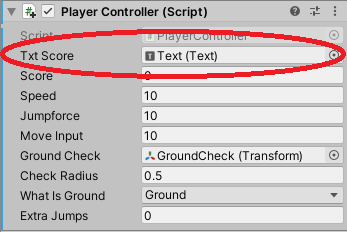

Tasohyppely
Perustoiminnot
Tarkoitus on laatia pohja tasohyppelylle jossa hahmo voi pomppia tasolta toiselle.
Player
- Lisää kansiot Prefabs, Scenes, Sprites, Scripts
- Lisää kansioon Scenes uusi Scene Game ja lisää se Hierarchy-ikkunaan. Poista alkuperäinen SampleScene.
- Lisää Sprites-kansioon neliö (Assets / Create / Sprites / Square)
- Raahaa neliö Hierarchy-ikkunaan ja nimeä se Player-nimiseksi. Aseta väri sopivaksi.
- Raahaa Player nyt Prefabs-kansioon.
- Avaa Prefab ja piirrä sille silmät ja suu
- Lisää hahmolle RigidBody2D, lisää myös BoxCollider2D
Lattia
- Raahaa neliö uudestaan Hierarchy-ikkunalle. Nimeä se esim. Floor, lisää tälle BoxCollider2D ja anna jokin sopiva väri. Lisää lattialle myös RigidBody2D ja aseta Dynamic-asetuksen sijaan Kinematic.
- Nyt voit piirtää Scenelle lattioita joilla kohta on tarkoitus hypellä.
Tee lattiasta Prefab raahaamalla se Prefabs-kansioosi.
PlayerController
- Lisää Scripts-kansioon uusi skripti PlayerController. Lisää skripti Player Prefabille.
public class PlayerController : MonoBehaviour { public float speed; public float jumpforce; public float moveInput; private Rigidbody2D rb; - Lisää Start()-metodiin rb:n alustaminen:
void Start() { rb = GetComponent<Rigidbody2D>(); } - FixedUpdate() eroaa Update()-metodista siten, että tätä voidaan kutsua useita kertoja framen aikana riippuen asetuksista. Update() tapahtuu kerran yhden framen aikana.
void FixedUpdate() { // oikea nuoli = 1, vasen nuoli = -1 moveInput = Input.GetAxis("Horizontal"); rb.velocity = new Vector2(moveInput * speed, rb.velocity.y); } - Testaa hahmon toimintaa tässä kohtaa, nyt pitäisi pystyä liikkumaan oikealle ja vasemmalle.
Flip
- Tehdään liikkumisesta joustavampaa, lisää aluksi uusi yksityinen attribuutti
private bool facingRight = true; - Tehdään Flip()-aliohjelma. Jos hahmo oli äsken katsonut oikealle niin nyt ei katsota:
void Flip() { facingRight = !facingRight; Vector3 Scaler = transform.localScale; Scaler.x = Scaler.x * -1; transform.localScale = Scaler; } - Samalla vaihdetaan myös x-arvo päinvastaiseksi.
Flip()-metodia kutsutaan kun hahmo olisi liikkumassa:
void FixedUpdate() { // oikea nuoli = 1, vasen nuoli = -1 moveInput = Input.GetAxis("Horizontal"); rb.velocity = new Vector2(moveInput * speed, rb.velocity.y); if (!facingRight && moveInput > 0) { // jos ei katsota oikeaan ja painettu oikealle Flip(); } else if (facingRight && moveInput < 0) { // tai jos katsotaan oikealle ja painettu vasemmalle Flip(); } }
GroundCheck
- Lisää PlayerlController-luokalle seuraavat muuttujat:
// onko hahmo maassa? private bool isGrounded; // tarkistus onko maa jalkojen kohdalla public Transform groundCheck; // tarkistettavan alueen säde public float checkRadius; public LayerMask whatIsGround; - isGrounded asetetaan FixedUpdate()-metodissa:
void FixedUpdate() { isGrounded = Physics2D.OverlapCircle(groundCheck.position, checkRadius, whatIsGround); - Avaa Player Prefab ja lisää uusi tyhjä GameObject, nimeä se GroundCheck. Siirrä tämä objekti hahmon jalkoihin, sitä käytetään tarkistamaan onko hahmo nyt maassa vai ei. Kannattaa valita vielä värikäs kuvake (Icon) Properties-ikkunasta muutoin näkymättömälle objektille.
Jos ikoni ei näy niin tarkista Gizmos-alasvetovalikko.
-
Raahaa nyt tämä GameObject julkisen muuttujan arvoksi.
- Aseta checkRadius-muuttujan arvoksi esimerkiksi 0.5.
- Jos GroundCheck on Default-layerilla niin kaikki on "maata" ja hahmo pystyy hyppimään rajattomasti. Tarvitaan oma layer joka määrittelee milloin ollaan kosketuksissa maahan.
- Lisää uusi layer "Ground"
- Aseta GroundCheck tälle uudelle Ground-layerille.
- Aseta lattia (ja mahdollisesti muut elementit jotka ovat "maata" samalle layerille.
- Aseta "What is Ground"-muuttujan avulla se Ground-layer.
Hyppääminen
-
Lisää vielä attribuutti extraJumps:
public int extraJumps; private int extraJumpValue = 2;
- Update()-metodissa voidaan hypätä:
void Update() { // jos ollaan maassa niin nollataan hypyt: if (isGrounded == true) { extraJumps = extraJumpValue; } if (Input.GetKeyDown(KeyCode.UpArrow) && extraJumps > 0) { rb.velocity = Vector2.up * jumpforce; extraJumps--; } else if (Input.GetKeyDown(KeyCode.UpArrow) && extraJumps == 0 && isGrounded == true) { rb.velocity = Vector2.up * jumpforce; } } - Alusta extraJumps Start()-metodissa:
void Start() { extraJumps = extraJumpValue; rb = GetComponent<Rigidbody2D>(); }
Jumittaminen
- Hahmo jää helposti kiinni lattiaan hypätessään. Pelaajan RigidBodylle pitää asettaa kitkaton materiaali.
- Lisää uusi 2D Physics Material. Nimeä järkevästi ja aseta Friction -ominaisuus nollaksi.
- Tämän jälkeen raahaa tämä luistava materiaali pelaajan RigidBody2D:n Physics Materialiksi.
1.Lopetusikkuna ja aloita uudestaan
Kun pelaaja tippuu pitäisi pelin päättyä. Lisätään Update()-metodiin tarkistus: jos y-koordinaatti on riittävän alhalla (riippuu peli-ikkunastasi) niin peli päättyy ja näytetään Game Over-scene.
- lisää uusi Scene kansioon Scenes - lisätään teksti ja painike
- Hierarchy-ikkuna, hiiren oikea, UI / Text - TextMeshPro. Ilmestyy valtava Canvas ja Text-objekti
- Tuplaklikkaa Canvas-objektia ja säädä teksti sopivaan muotoon.
- Lisää Canvas-objektille uusi Button, anna teksti esimerkiksi "Aloita uudestaan".
Scenen lisääminen mukaan projektille
- Avaa File / Build Settings...
- Lisää molemmat scenet mukaan projektille
Scenen vaihtaminen pelissä kun hahmo tippuu:
using UnityEngine.SceneManagement;
- Lisää FixedUpdate()-metodiin if-lause:
if (rb.transform.position.y < -10) { SceneManager.LoadScene("GameOver"); }
GameOverScript:
- Lisää uusi skripti GameOverScript
- Lisää alkuun:
using UnityEngine.SceneManagement;
- Skripti sisältää vain yhden aliohjelman.
public class GameOverScript : MonoBehaviour { public void StartGame() { SceneManager.LoadScene("Game"); } }
GameOver-scene, GameOverController:
- Lisää uusi tyhjä GameObject (hiiren oikea / Create Empty), nimeä se esim. GameOverController Lisää GameOverController-objektille uusi komponentti GameOverScript (raahaamalla tai Add Component-painikkeen avulla).
-
Lisätään toiminto painikkeelle:
- paina +-merkkiä On Click() -listassa
2. Spike
Laadi jokin tuli, piikki, lima tai muu ektoplasma johon astuminen on vahingollista hahmolle ja aiheuttaa pelin päättymisen.
- Tee uusi Prefab esimerkiksi kolmiosta.
- Aseta väri
- Lisää PolygonCollider2D. Voit kokeilla säätää Edit Collider-attribuutilla rajoja halutuksi. Aseta isTrigger jotta tärmätessä aktivoituisi Trigger-tapahtuma.
- Lisää tag joka kuvaa elementtiä, esim. "spike".
- Lisää PlayerController-skriptille toiminto OnTriggerEnter2D
private void OnTriggerEnter2D(Collider2D col) { if (col.gameObject.tag == "spike") { // osuttiin piikkiin - pelin pitäisi päättyä Debug.Log("spike: " + col.gameObject.name); } }Kun pelaaja osuu piikkiin pitäisi pelin päättyä.
- Raahaa muutamia esteitä kentällesi.
3. Uusi taso
- Lisää ovi sopivaan kohtaan ensimmäiselle tasollesi.
- Kun hahmo osuu oviaukkoon avataan toinen taso. Luo toinen taso uudeksi Sceneksi.
4. Pisteiden kerääminen
- Tee hedelmä, tähti tms. kerättävä objekti jota hahmosi tulisi kerätä pelikentältä. Tee tästä objektista Prefab. Lisää hedelmälle jokin tag, esimerkiksi "fruit".
- Lisää pelaajalle luokan alkuun int -tyyppinen muuttuja score.
public int score;
- Lisää objektille BoxCollider, aseta isTrigger päälle (true). Jatka PlayerController-skriptin OnTriggerEnter2D:n koodia, nyt pitäisi kasvattaa pisteitä ja tulostaa pisteiden määrä konsolissa.
private void OnTriggerEnter2D(Collider2D col) { if (col.gameObject.tag == "spike") { // osuttiin piikkiin - pelin pitäisi päättyä Debug.Log("spike: " + col.gameObject.name); } if (col.gameObject.tag == "fruit") { // kasvata pisteitä yhdellä Debug.Log("score: " + score); // poista törmätty objekti col.gameObject.SetActive(false); } }
5. Pisteet näkyviin
- Lisää hierarchy-ikkunaan uusi Text-elementti (hiiren oikea / UI / Text - TextMeshPro).
- Syntyy valtava Canvas joten pienennä se aluksi (Render Mode: World Space, Pos X 0, Pos Y 0, Scale 0.03 x 0.03 x 0.03)
- Siirrä Text-elementti sopivaan kohtaan ja kirjoita tekstiksi tässä vaiheessa esimerkiksi "Pisteet:0"
-
PlayerController.cs: Lisää uusi julkinen muuttuja
public TextMeshProUGUI txtScore;
Tarvittaessa lisää kirjastousing TMPro;
- Raahataan Text-elementti editorissa julkisen muuttujan kohdalle. Nyt muuttuja viittaa tähän käyttöliittymän Text-objektiin.

- Lopuksi päivitetään pisteet näkyviin Text-objektille kun pisteet kasvavat.
txtScore.text = "Pisteet:" + score;
6. PlayerPrefs
- Tarkoitus on välittää tieto yhdeltä Sceneltä toiselle. Tämä onnistuu PlayerPrefs:n avulla.
- Windows-ympäristössä PlayerPrefs tallennetaan rekisteriin osoitteessa HKCU\Software\[company name]\[product name]. Tätä ei tarvitse käydä katsomassa rekisteristä vaan luotetaan sen menevän oikeaan osoitteeseen.
- PlayerPrefs tallentaa tietyllä avaimella (key) jonkin tiedon (value).
- Start()-metodissa voit asettaa esimerkiksi avaimelle PlayerScore arvon nolla:
PlayerPrefs.SetInt("PlayerScore", 0); - Kun hahmo kuolee voidaan asettaa nykyinen pistemäärä muistiin.
PlayerPrefs.SetInt("PlayerScore", score); - GameOver-ikkunalla voit hakea vastaavasti PlayerScore-tiedon seuraavasti:
int score = PlayerPrefs.GetInt("PlayerScore"); - Näytä GameOver-ikkunalla pelaajan keräämät pisteet, toimitaan samaan tapaan kuin aikaisemmin:
- Lisää Text-objekti ja kirjoita sen tekstiksi esimerkiksi "Pisteet: 0"
- Lisää GameOverScript-skriptille julkinen muuttuja
public TextMeshProUGUI txtScore;
- Raahaa editorissa Text-objekti GameOverScript-skriptin txtScore-muuttujalle arvoksi, silloin koodissa tehty muutos vaikuttaisi juuri tähän käyttöliittymän objektiin.
- Lisää GameOverScriptille Start()-metodi jota kutsutaan kun tämä käynnistyy:
public void Start() { int score = PlayerPrefs.GetInt("PlayerScore"); txtScore.text = "Pisteet:" + score; }
- PlayerPrefs soveltuu tilanteisiin kun halutaan säilyttää pientä tietomäärää tallessa. Ongelma on se, että tietotyyppejä on vain int, string ja float. Esimerkiksi sijainti vaatii jo kaksi-kolme float-muuttujaa. Yksi vaihtoehto on käyttää JSON-tietoa ja tallettaa se string-muuttujassa.
7. Tiedoston tallennus
- Tallenna pisteet myös tiedostoon, tarkoitus on lukea pisteet High Score-taulukkoon.
- Tarvitset kirjaston
using System.IO;
- Tiedoston kirjoittaminen on hyvin helppoa.
string fileName = "Scores.csv"; string path = "Assets/Resources/" + fileName; StreamWriter writer = new StreamWriter(path, true); writer.WriteLine(score); writer.Close();
System.DateTime.Now.
string row = score + "; " + System.DateTime.Now.ToString("yyyy/MM/dd HH:mm:ss");
Lähteitä ja linkkejä
Pääasiallinen lähde tälle demolle on youtube-video jossa käydään sama asia läpi.